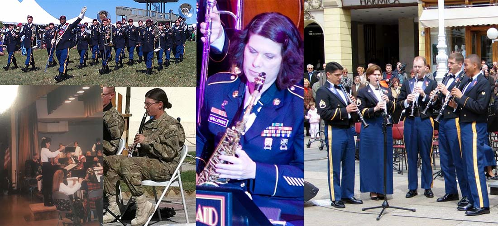

Experience
I have many years of experience as a musician and teacher. In addition, I have training in instructional technology and graphic design. Both skills are valuable in my teaching activities.
Assistant Instructional Technology Specialist
2017-Present
Virginia Adult Learning Resource Center
Richmond, VA
Here I design, develop, and deploy interactive e-learnings, lead webinars, and create other types of web-based content to include job-aids, simulations, assessments, and coursework that applies the Universal Design for Learning. I also ensure ADA/508 compliance and provide technical support for online facilitated courses.
Major Accomplishments
- Presented at 2018 and 2019 Adult Education and Literacy Conference
- Redesigned the PROGRESS newsletter
- Created self-paced learning module for Virginia's adult education assessment policy
Private Clarinet Instructor
1992-2016
Lawton, OK
Powder Springs, GA
Sierra Vista, AZ
Hagerstown, MD
I have been teaching private lessons since college when I got my very first job teaching clarinet and saxophone at Machen Music in Hagerstown, Maryland. During that time, I also served as a woodwind instructor for several local marching bands. I’ve since maintained a studio ranging from 3-16 students. I prepared these students for school, district, state, and summer camp auditions. I also prepared students for multiple studio recitals.
Major Accomplishments
- Many students made first chair, all-state, all-county, and all-district band
- Three students majored in music in college
- One student was selected for the prestigious Lift Clarinet Academy summer program
U.S. Army Music Program
1996-2016
Fort Sill, Oklahoma
Fort Bragg, NC
Heidelberg, Germany
Fort McPherson, GA
Fort Huachuca, Arizona
In the Army, I played clarinet, bass clarinet, saxophone, and flute in concert, marching, and jazz bands as well as woodwind quintet and clarinet quartet. In several bands, I also served as clarinet section leader where I was responsible for preparing and rehearsing sections for performances, including a 2011 deployment to Afghanistan. In addition to my musical duties, I also served in administrative support, operations, security, and retention.
Major Accomplishments
- Maintained an additional skill identifier, denoting musical excellence
- Performed for audiences in the millions, including major league baseball games, the funeral for Senator Barry Goldwater, and the 70th and 75th anniversary for D-Day in Normandy, France
- Performed in 32 countries and 18 states
- Performed the Mozart Clarinet Concerto with the 36th Army Band at Fort Huachuca, Arizona